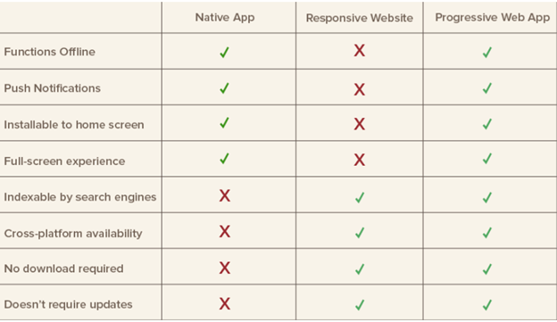

Application software is a natively built Application with a program or a group of programs that perform a specific task for the end-user; these tasks can be educational, personal, or business-oriented. An example
of application software is the Spotify App, which one can find in the app store or Google Play. A progressive web application (PWA) performs the same job an application software performs, but this is done
on the web using web technologies such as HTML, CSS, and JavaScript. For a web app to be a progressive web app, it should have the following features: Secure context (HTTPS), Service workers, Manifest file.
A secure context proves that the website is a trusted website; therefore, users can share transitions and other personal information. The service worker is a proxy that sits between web applications, the
browser, and the network, therefore displaying dynamic information or static if the network is down (Offline). Offline usage of service is one of the PWAs functionalities APWA has more functionalities than
a standard web app: it is faster at providing content, has an offline mode, and can be added to a home screen of a phone or website and still function as an Application software.

(simitchart.com)
Before researching this topic, I never know that progressive web apps are websites that can be installed on a home screen without the need for an app store. With that said, it can offer a lot of functionalities that both native software applications or websites can not provide. I believe that PWs will play a big part in a pure collision of the native application software world with the web app development world.